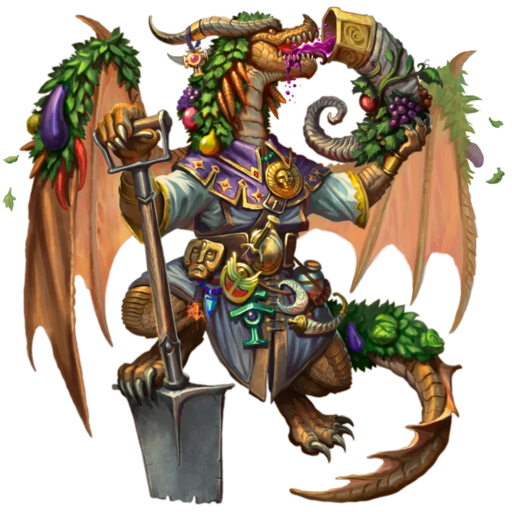

|
在众多类人种族的文化中，巨龙都是力量与强盛的象征。因此，再加上与生俱来的傲慢，巨龙往往很难承认事情出了差错。然而，有些巨龙体内奔涌着狂暴的魔法能量，这股能量一旦失控飙升，便会彻底改变它们的一生。有时，整支龙族血脉都会继承这种魔力，并在漫长的世代中延续下去。但对于这些所谓的“异类龙”而言，这股失控的能量究竟意味着什么？整个巨龙社会或许对它们不屑一顾，但它们强大的魔力却为其带来了无穷无尽的未开发潜能！ 你是一条丰收龙，出身于一脉园艺师与庆典筹划者世系，既以高超的魔药酿造技艺闻名，也因热爱节庆盛会而著称。你是莱希龙家族的一员。你的关联伤害类型为毒素，你的吐息武器为15尺锥状，需要进行体质豁免。你可以选择是否获得日光之力。 巨龙特质属性值提升。你的力量或智力值提升2点。 年龄。任何年龄段的巨龙都可以举行永恒之光仪式，因此哪怕是一条刚完成仪式的初生永光龙，严格来说也可能已经活了数千岁。不过，仪式澎湃的魔法能量会洗去衰老的痕迹。从仪式中苏醒的初生永光龙洋溢着青春活力与无限潜能。尽管部分学者持不同看法，但只要不死于暴力或其他灾祸，永光龙的寿命与传统派巨龙同样漫长。 阵营。永光龙的龙族血统会强烈影响其信念，但影响程度远不如同血统的传统派巨龙。例如，银永光龙往往是善良的捍卫者，而黑永光龙则往往狡诈刻薄。然而，永光龙深知龙脉并非不可违逆的宿命。任何永光龙都可以完全抛弃先祖的旧习，去开拓属于自己的道路。 体型。除非一条永光龙将自身魔力专注于增大体型（许多永光龙都会这样做），否则它们的体型并不会比常见的类人种族更大。你的体型可在小型或中型之间自选。 速度。你的基础步行速度为30尺。 黑暗视觉。你同样具备传统派巨龙的敏锐感官。在距离你60尺范围内，你可以将微光光照视作明亮光照，将黑暗视作微光光照。你在黑暗中无法分辨颜色，只能看到灰度的影像。 龙之馈赠。你从巨龙职业所列的龙之馈赠中获得一项龙之馈赠。如果某项馈赠具有先决条件，你必须满足其先决条件才能获得它。 龙类。你的生物种类为龙类，而非类人生物。 天生武器。除常规的徒手打击外，你还获得两种天生武器攻击：啃咬攻击与爪击攻击。你的啃咬攻击造成1d6点穿刺伤害；你的爪击攻击造成1d4点挥砍伤害。 你必须至少有一只手空闲才能发动爪击攻击。 你在进行爪击攻击的攻击检定和伤害掷骰时可以使用敏捷代替力量，但啃咬攻击不适用。 语言。你能够说、读、写通用语和龙语。 节庆常客。你具有游说技能的熟练项。你在派对或节庆期间进行的魅力（游说）检定具有优势。 永光丰收龙背景设定丰收龙体态圆润、健朗而明快。它们的身躯矮阔敦实，由秋日色调的累累瓜果与蔬菜构成，尾巴上生长着红橙相间的叶片。尽管体型敦实，它们却长着纤细的利爪手指，非常适合使用小型工具与处理精细活计。打理生长在自己身上的蔬果园圃是丰收龙日常清洁中最重要的一环；任由身上的作物腐烂变质，是丰收龙所能犯下的最严重的社交失仪之一。 大多数传统派丰收龙生活在庞大的龙族社区中，与琥珀龙、毒蕈龙等其他注重群体与社交的巨龙比邻而居。它们和蔼可亲、举止克制，只是多少有些爱打听闲事，因此成了琥珀龙邻居获取新鲜流言的宝贵来源。丰收龙热衷于筹划精致考究的庆典与节日，但在它们能够提前排期并周密规划的正式庆典之外，许多丰收龙更喜欢远离聚光灯，保有自己的独处时光与隐私。 聚居着大量丰收龙的村落中往往生活着宴会司礼――这是一群专职的派对与庆典策划师，他们以庄重而虔敬的态度对待款待宾客的艺术。对丰收龙而言，司宴之道是一门严肃的事业，这一职位也享有崇高的权力与敬意。哪怕是不明白这一头衔含义或重要性的其他巨龙，也绝不会错过宴会司礼举办的派对，因为宴会司礼那传奇般派对的盛名，往往比丰收龙习俗本身流传得还要深远得多。 由于居住在规模较大的龙族城镇或村落中，丰收龙的巢穴通常是蜿蜒舒展的庄园，配有气派的工坊与宁静的花园小径。传统派丰收龙的家族通常会共同生活在同一片家园领地上，每条成年巨龙都会在领地内建造并打理属于自己的庄园。 丰收龙是狂热的园丁与农夫，在照料自身躯体上作物的同时，也悉心耕种土地里的庄稼。它们喜爱培育新品种的花卉、果实或其他植物，尤其热衷于精心选育全新的植物品系，并以自己和家族的名字为这些成果命名。许多传统派丰收龙还会在花园中栽种魔法草药与药用植物，将其与自身培育出的丰硕果实相搭配，酿造出效力强劲的美酒与药剂。 丰收龙家族十分注重隐私与礼数，即便在自家人之间也是如此――哪怕是最轻松的家庭内部聚会，它们也会事先规划并拟定详尽的日程表。那些比社区中其他同族更加随性、更爱交际的年轻巨龙，往往会觉得家族庄园里的生活令人窒息，进而被永恒之光仪式与冒险生涯所吸引。这些巨龙会成为充满活力的吟游诗人与剑客，周游世界以追寻永不落幕的盛宴。仍保有传统偏好的永光龙则往往成为德鲁伊、游荡者或圣武勇士；而那些依然秉持着丰收龙以利爪创造之热忱的个体，则会走上发明家的道路，将无数新奇构想化为创新造物，而非一味打磨家族传承的旧有技艺。 共享丰收飨宴许多丰收龙喜欢与家人、朋友及冒险同伴分享生长在自己身上的水果与蔬菜。如果一条丰收龙主动向你奉上它的收成，拒绝这份馈赠会被视为严重的冒犯――这意味着受赠者认为这条巨龙的身体及其收成存在问题或不够洁净。容易焦虑的冒险巨龙即便内心很想分享，也极少把自己的果实递给非龙类同伴，因为它们实在太过害怕遭到这样的拒绝。 延伸阅读：对应怪物图鉴：丰收龙 ・ 主书通用巨龙种族特质 ・ 巨龙职业 ・ 本卷新增龙之馈赠 |
 丰收龙（Harvest Dragon） |